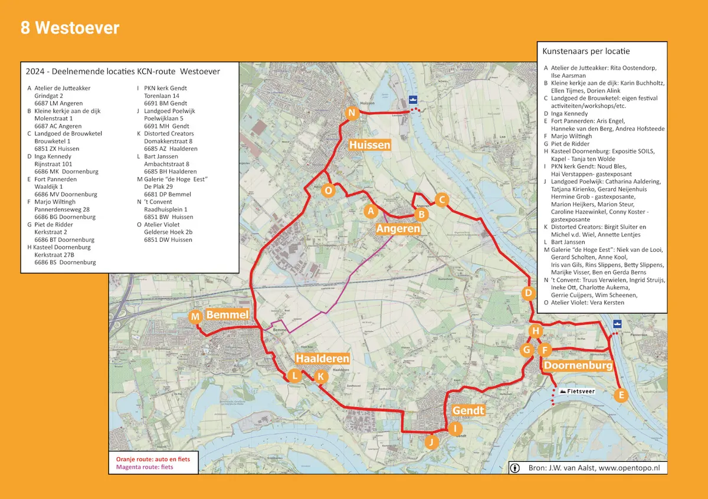
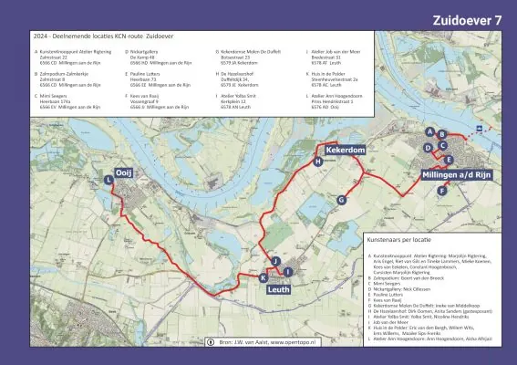
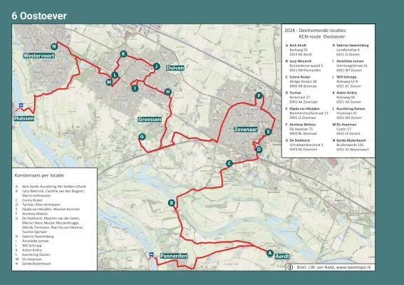

Nieuws ·
Kunstroute 2024 - Verbindingen kleuren onze wereld

Een prachtig voorbeeld is de verbinding die zo’n 80 kunstenaars in de afgelopen jaren samen hebben gerealiseerd via het Kunstcollectief Gelderse Poort, terwijl zij toch betrekkelijk geïsoleerd werken en wonen aan de gescheiden oevers van Rijn en Waal. Samen werd het veel kleurrijker!
In alle gemeenten op dit kaartje zijn kunstenaars verbindingen aangegaan met elkaar, en met hun passie voor de kunsten in de breedste zin. Ze tonen elkaar hun werk, staan open voor kritiek, leren van elkaar, gaan samenwerkingen aan en spiegelen elkaar, waardoor het niveau elk jaar weer beter wordt. Gemiddeld 6x per jaar komen ze bij elkaar, voor lezingen, exposities en samenkomsten, om vooral hun verbindingen te versterken.


Jaarlijkse Kunst- en Cultuurroute
Op zaterdag 14 en zondag 15 september vindt het betoverende hoogtepunt plaats van de jaarlijkse ‘ODE aan de Gelderse Poort’. Er zijn drie mooie tochten uitgezet door de bijzondere natuur van het Gelderse rivierenlandschap, die je per fiets, per auto, of te voet kunt maken. Deze drie routes voeren je op de West-, Oost-, en Zuidoever langs een groot aantal open ateliers waar bevlogen kunstenaars de verbinding met jou, de bezoeker, aangaan en waar je hartelijk welkom bent. Het pontveer Millingen Pannerden is volop in de vaart voor de fietsers en wandelaars. Op zondag 15 september word je er door de veerbaas overgezet, terwijl er afwisselend aan beide oevers vrolijke muziek wordt gespeeld en gezongen door de 4 koppige groep ‘Van Onder en van Boven’ (de rivier !) van Stef Soons.
Kunsteditie Ode aan de Gelderse Poort 2024
Via de losse route-flyer en de ‘Kunsteditie Ode aan de Gelderse Poort 2024’, waarin ook de drie routes staan afgebeeld, kies je jouw eigen route. Je leest het programma van de plaatsen onderweg, met allerlei mogelijkheden tot het maken van ‘jouw verbinding’. Kopje koffie, glaasje fris, goed gesprek, mooi werk en dat allemaal gratis toegankelijk! Voor wie dat handig vindt is er ook een GPS-route gemaakt, die je kunt volgen via de QR-code.
Er is een ‘verbinding’ te vinden voor iedereen: voor liefhebbers van de teken- en schilderkunst, grafiek, fotografie en film, dans, dichtkunst, muziek, sieraden, keramiek, glaskunst, beeldhouwwerk en ruimtelijke vormgeving. Verbreed jouw verbinding en geniet van die bijzondere mensen die je anders wellicht niet zou ontmoeten. Op een KunstenKnooppunt tref je soms wel 5 of 10 kunstenaars aan, verzameld op één plek !
Tussen 11.00-17.00 uur is alles toegankelijk. Gratis routekaartjes liggen klaar in alle ateliers.
Onze jaarlijkse Kunst-editie/adresboekje met de namen, gegevens en disciplines van alle kunstenaars, is voor € 5,00 te koop.
Deze catalogus wordt gezien als een belangwekkend naslagwerk van de kunsten in jouw gemeente. Door sommige kunstliefhebbers als gadget/verzamelobject bewaard !
Schrijf de data alvast in je agenda en beslis later of je een hele dag, of misschien 2 halve dagen gaat. Er is meer dan genoeg te zien op deze unieke Kunst-Cultuur-Natuurroute in de Gelderse Poort!
Kunstroute 2024
Deze kunstroute vindt ieder jaar plaats in het 2e weekend van september. Er worden 3 mooie routes uitgestippeld, op elke oever één. Deze routes overlappen elkaar als je de rivier of het Pannerdens Kanaal oversteekt.
Dit jaar op 14 en 15 september.
Openingstijden: 11:00u-17:00u
Meer informatie
Meer informatie zoals welke deelnemers meedoen, wat de route en het programma is kan je vinden op de website van de Gelderse Poort: https://www.kunstcollectiefgeldersepoort.nl/ode-aan-de-gelderse-poort-2024/
Eenvoudig navigeren naar één van de deelnemers kan je via deze link